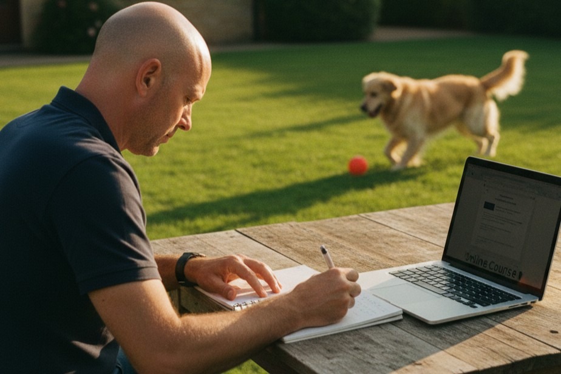
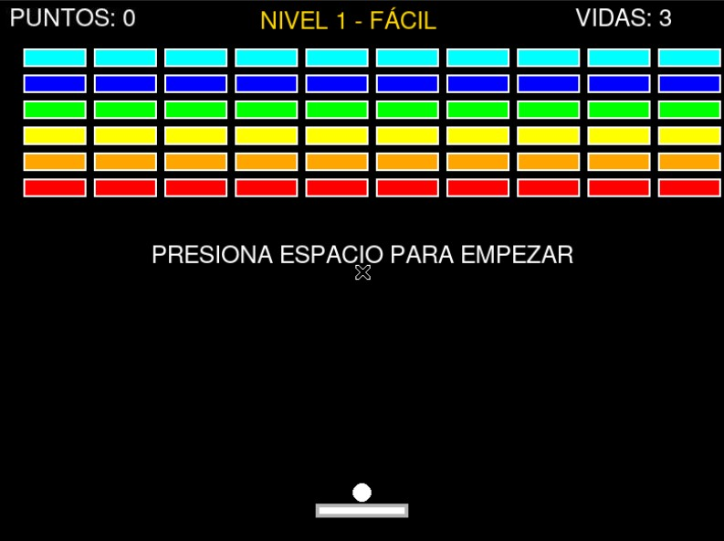

Sobre nosotros

Nuestra misión: ofrecer los mejores servicios de alta tecnología.
Este proyecto nació con la necesidad de construir un mundo en el que los prototipos y las ideas se hagan realidad.
Fundada en 2025 por Iván Gimeno e Izan Gregorio nos presentamos como una startup de tecnologías frontera en plena etapa de expansión.
Historia
10 dic
- Desarrollo de cursos en formato H5P.
- Los cursos tratan sobre: viajes espaciales, cuántica, biotecnologia, ciudades ecológicas y manipulación climática.
- Todos ellos cuentan con una introducción que detalla los puntos clave del curso y al público al que se dirige.
Cursos

14 ene
- El juego está basado en Arkanoid.
- Está desarrollado mediante el lenguaje de programación Python añadiendo la bibilioteca para juegos Pygame.
- La integración en la web se hace con un iframe de la herramienta Trinket.
Python

28 ene
- Desde el equipo de Opalo E-Learning hemos desarrollado un manifiesto sobre los principios, valores y conductas que nos representan como la organización empresarial y ética que somos.
- Así mismo, destacamos la importancia y el trabajo que le dedicamos a la sostenibilidad, el medioambiente y el cumplimiento de los Objetivos de Desarrollo Sostenible.
Sostenibilidad

11 feb
- Por último, comprobación de errores detectados y modificaciones necesarias tras los comentarios recibidos tanto; por parte, del tutor responsable del trabajo; como parte de los compañeros.
- Desde el punto de vista técnico, nuestro objetivo era optimizar el código y los contenidos para evitar "engordar" de forma innecesaria el proyecto.
Mejoras

22 abr
- Creación de los preparativos para la "demo" o muestra del proyecto.
- Desarrollo de; el documento necesario para realizar la explicación y sentido del proyecto ante el jurado, y escritura de la memoria que se trata de un compendío de los trabajos preparativos anteriores basada en el índice previamente acordado.
- La presentación en cuestión se realiza en la sala de actos del centro ante el jurado que decidirá, en última instancia; el ganador.